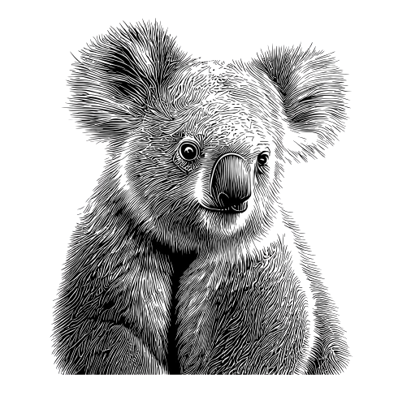

What is this wicked animal?
The Mysterious Koala
The Mysterious Koala - A Researcher's Findings
Koalas are fucking horrible animals. They have one of the smallest brain to body ratios of any mammal, additionally - their brains are smooth. A brain is folded to increase the surface area for neurons. If you present a koala with leaves plucked from a branch, laid on a flat surface, the koala will not recognise it as food. They are too thick to adapt their feeding behaviour to cope with change. In a room full of potential food, they can literally starve to death. This is not the token of an animal that is winning at life. Speaking of stupidity and food, one of the likely reasons for their primitive brains is the fact that additionally to being poisonous, eucalyptus leaves (the only thing they eat) have almost no nutritional value. They can't afford the extra energy to think, they sleep more than 80% of their fucking lives. When they are awake all they do is eat, shit and occasionally scream like fucking satan.